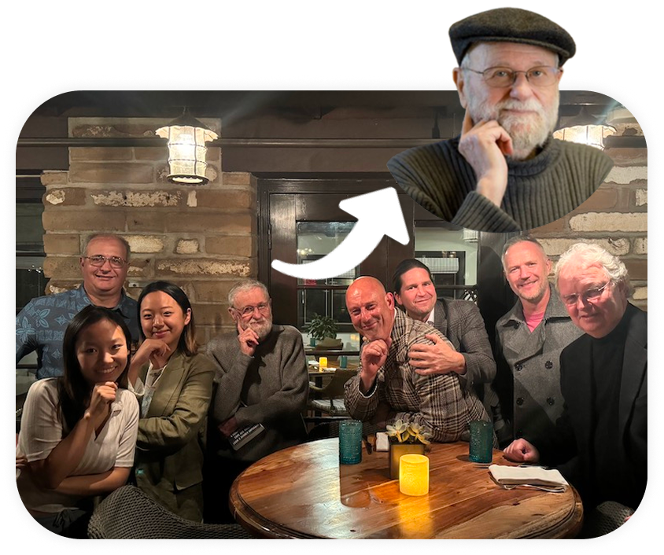
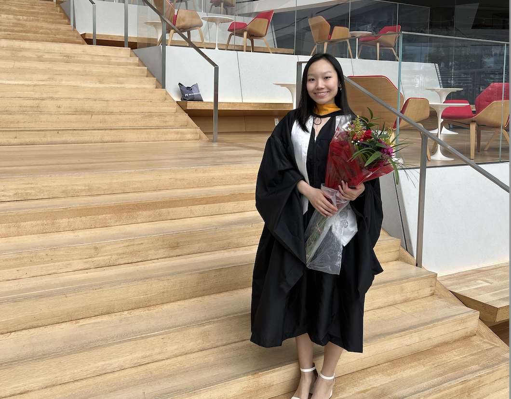

<!DOCTYPE html>
<html lang="en">
<head>
    <style>
*, *::before, *::after { box-sizing: border-box; margin: 0; padding: 0; }

        :root {
            --sidebar-w: 220px;
            --bg: #ffffff;
            --text: #1a1a1a;
            --muted: #aaaaaa;
        }

        body {
            background: var(--bg);
            font-family: "Inter", ui-sans-serif, sans-serif;
            color: var(--text);
            overflow-x: hidden;
        }

        .shell {
            display: flex;
            min-height: 100vh;
        }


        .main {
            margin-left: var(--sidebar-w);
            flex: 1;
            display: flex;
            flex-direction: column;
            min-height: 100vh;
            padding: 80px 120px 48px 48px;
            max-width: 1220px;
        }

        .about-heading {
            font-size: clamp(20px, 5vw, 35px);
            font-weight: 300;
            letter-spacing: -0.03em;
            line-height: 1.15;
            color: var(--text);
            margin-bottom: 20px;
        }

        .about-body {
            font-size: clamp(15px, 1.5vw, 18px);
            font-weight: 300;
            line-height: 1.6;
            color: var(--text);
            max-width: 920px;
        }

        .site-footer {
            margin-top: 48px;
            font-size: 10px;
            text-transform: uppercase;
            letter-spacing: 0.3em;
            color: var(--muted);
            font-family: "JetBrains Mono", monospace;
        }

        .about-sections {
            margin-top: 64px;
        }

        .about-section {
            padding-bottom: 56px;
        }

        .about-num {
            font-size: 11px;
            color: var(--muted);
            font-weight: 300;
            letter-spacing: 0.12em;
            display: block;
            margin-bottom: 14px;
        }

        .about-divider {
            border: none;
            border-top: 1px solid #f0f0f0;
            margin: 0 0 56px 0;
        }

        .img-placeholder-row {
            margin-top: 32px;
            display: grid;
            grid-template-columns: repeat(3, 1fr);
            gap: 12px;
        }

        .img-placeholder {
            aspect-ratio: 4 / 3;
            background: #f7f7f7;
            border: 1.5px dashed #e0e0e0;
            border-radius: 8px;
        }

        @media (max-width: 680px) {
            .main { margin-left: 0; padding: 32px 24px 48px; }
        }
    </style>
    <meta charset="UTF-8">
    <meta name="viewport" content="width=device-width, initial-scale=1.0">
    <title>Yi Lu | About</title>

    <link rel="preconnect" href="https://fonts.googleapis.com"/>
    <link rel="preconnect" href="https://fonts.gstatic.com" crossorigin/>
    <link rel="stylesheet" href="https://fonts.googleapis.com/css2?family=Inter:wght@300;400;500;600&family=JetBrains+Mono&display=swap"/>

    <script src="https://unpkg.com/react@18/umd/react.production.min.js" crossorigin></script>
    <script src="https://unpkg.com/react-dom@18/umd/react-dom.production.min.js" crossorigin></script>
    <script src="https://unpkg.com/@babel/standalone/babel.min.js"></script>
    <script src="https://cdn.tailwindcss.com"></script>

    <script>
        tailwind.config = {
            theme: {
                extend: {
                    fontFamily: {
                        sans: ['Inter', 'ui-sans-serif', 'system-ui', 'sans-serif'],
                        mono: ['JetBrains Mono', 'ui-monospace', 'monospace'],
                    }
                }
            }
        }
    </script>
</head>
<body>
    <div id="root"></div>

    <script src="nav.js"></script>
    <script>initNav('about');</script>
    <script type="text/babel">
    function App() {
        return (
            <div className="shell">

                {/* ── Main ── */}
                <main className="main">
                    <div className="about-sections">

                        <div className="about-section">
                            <span className="about-num">01</span>
                            <h1 className="about-heading">Design journey</h1>
                            <hr className="about-divider" />
                            <p className="about-body">I started my design journey working with people living with diabetes at Don Norman's Design Lab at UC San Diego. That experience opened my eyes to how designers can create real impact, not necessarily big gestures, but simply by taking the time to understand people's lives.</p>

                            <div className="img-placeholder-row">
                                
                                
                            </div>
                        </div>

                      
                        <div className="about-section">
                            <span className="about-num">02</span>
                            <h1 className="about-heading">I love getting people together</h1>
                            <hr className="about-divider" />
                            <p className="about-body">I hosted Cornell Tech's Creative Tech Summit and served as student president of MASA at UC San Diego, where I organized events including an Asian Night Market that brought together over 2,500 participants. Building community is something I care about as much as building products.</p>
                            <p className="about-body" style={{marginTop: '16px'}}>In May 2026, I hosted a creative tech summit at Cornell Tech!</p>

                            <div className="img-placeholder-row">
                                
                                
                            </div>
                        </div>

                       

                    </div>

                    <footer className="site-footer">&copy; 2026 Yi Lu</footer>
                </main>

            </div>
        );
    }

    const root = ReactDOM.createRoot(document.getElementById('root'));
    root.render(<App />);
    </script>
</body>
</html>